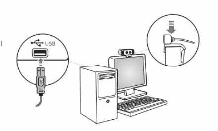
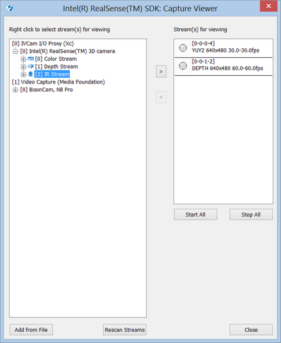

To setup the camera, complete the following steps. If the camera is already integrated into the computer or laptop, skip to step 3.
| 1. | Install the camera on top of the computer or laptop lid. |
| 2. | Plug the USB connector into one of the USB3 ports, as illustrated in Figure 1. |

Figure 1: Camera Setup Position
| 3. | Position yourself comfortably, with your back supported by the chair in a relaxed position, so that your hands can move freely in front of the camera. |
 To avoid fatigue, it is critical to find a relaxed position that satisfies the above requirement.
To avoid fatigue, it is critical to find a relaxed position that satisfies the above requirement.
Here are the steps to check if the SDK and the camera are installed correctly:
| 1. | From the Startup menu, select Startup>Intel® RealSense™ SDK>Tools>Capture Viewer to launch the capture_viewer application. |
| 2. | Select a color stream and a depth stream. |
| 3. | Click Start All to render the streams. |
 If your screen looks similar to the one shown in Figure 2, the camera is working as expected.
If your screen looks similar to the one shown in Figure 2, the camera is working as expected.

Figure 2: Camera Testing for Color and Depth